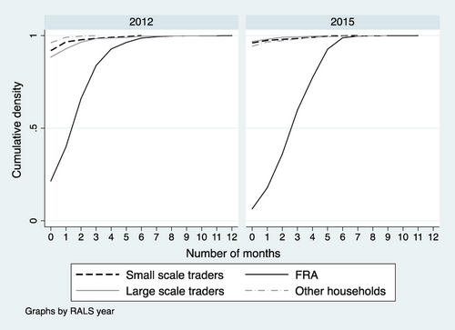

Liquidity constraints for variable inputs at planting time and the maize production and marketing decisions of smallholder farmers in Zambia.
with Nicole Mason, David Mather, Brian Chisanga, and Thomas Jayne- Agricultural Economics
Read Abstract
Increasing smallholders market participation is acknowledged as an important step towards greater rural prosperity in developing countries.